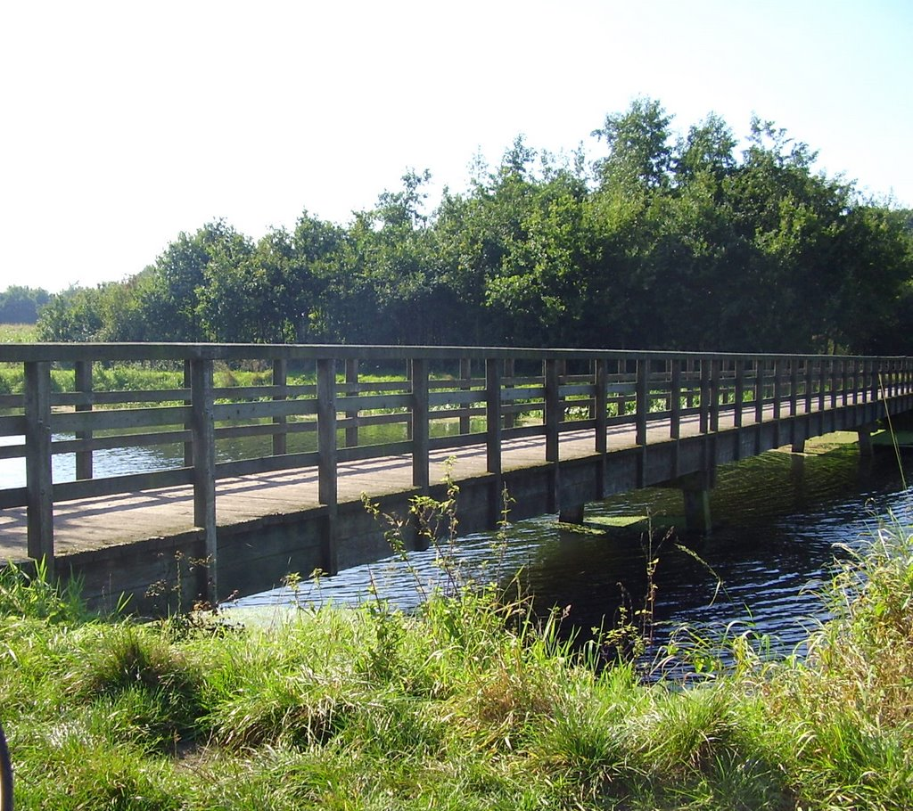

5 Feiten
Inwoners: Ongeveer 34.318 (september 2025).
Oppervlakte: 65 km², waarvan 0,07 km² water.
Heet Buxtel of Buchestelle in oude documenten
Is een samenstelling van stelle 'stal,veilige verblijfplaats' en buk 'reebok'
Is gelegen aan rivier de Dommel
Kasteel Stapelen

Dat het kasteel niet vanbinnen te bezichtigen is,
is de locatie wel de moeite waard voor een wandeling.
Het kasteel ligt in een park, omringd door een slotgracht.
Vanaf de ophaalbrug kun je het neo-gotische gebouwencomplex uit 1857-1858 bekijken.
Het kasteelpark ligt aan de Dommel, nabij het centrum van Boxtel.
Het is een populaire locatie voor trouwfoto's.
De Hooibrug

De Hooibrug is een brug over de rivier de Dommel,
gelegen tussen Boxtel en Gemonde.
Oorspronkelijk was het een functionele oversteekplaats
waar boeren hun vee konden laten grazen
aan weerszijden van de Dommel en hun oogsten konden binnenhalen.
Tegenwoordig maakt de Hooibrug deel uit van diverse populaire
wandel- en fietsroutes door het Brabantse landschap.